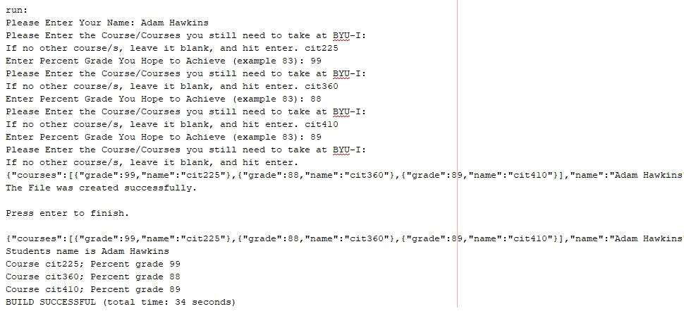
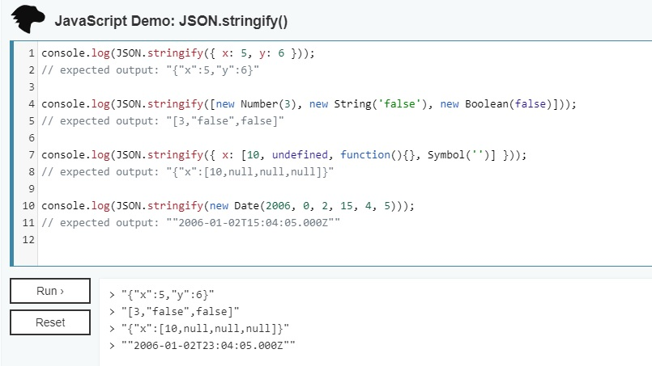

JSON Parse, Stringify

JSON stands for Java Script Object Notation
It is a syntax for storing and exchanging data
JSON is really handy since you can store, exchange and send Data in JavaScript
Parse
Parsing generally means interpreting. JSON is a format specification as mentioned by the rest. Parsing JSON means interpreting the data with whatever language u are using at the moment. JSON are usually read as string first - we usually call that the JSON string (a string that follows the JSON specification). When we parse JSON, it means we are converting the string into a JSON object by following the specification, where we can subsequently use in whatever way we want.:
In the example I used you can gather information from an end user on the classes that they still need to take at BYU-I and the desired grade that they hope to achieve. You can then print it out to a separate file or store the data in the array. The outcome of the program would look something like this based on the users input:
package json;
import java.io.File;
import java.io.FileNotFoundException;
import java.io.PrintWriter;
import java.util.Scanner;
import org.json.simple.JSONArray;
import org.json.simple.JSONObject;
import org.json.simple.parser.JSONParser;
import org.json.simple.parser.ParseException;
/**
*
* @author adam
*/
public class JSON {
public static void main(String[] args) {
Scanner input = new Scanner(System.in);
System.out.print("Please Enter Your Name: ");
String name = input.nextLine();
// Here you create the JSON object with a name-name value
JSONObject root = new JSONObject();
root.put("name", name);
// Here you declare array and then add to loop
JSONArray courses = new JSONArray();
while (true) {
// Ask user for courses they still need to take at BYU-I
System.out.print("Please Enter the Course/Courses you still need to take at BYU-I:\nIf no other course/s, leave it blank, and hit enter. ");
String course = input.nextLine();
// Break loop if user leaves course field blank and hits enter
if (course.length() == 0) {
break;
}
// Ask user for grade they hope to achieve
System.out.print("Enter Percent Grade You Hope to Achieve (example 83): ");
int grade = input.nextInt();
if (input.hasNextLine()) {
input.nextLine();
}
// Here you create and store JSON object
JSONObject courseObject = new JSONObject();
courseObject.put("grade", grade);
courseObject.put("name", course);
// Add course to array
courses.add(courseObject);
}
// Add the array to root object
root.put("courses", courses);
System.out.println(root.toJSONString());
// Trying to create a text file
File file = new File("StudentInfo.txt");
try (PrintWriter writer = new PrintWriter(file)){
writer.print(root.toJSONString());
} catch (FileNotFoundException ex) {
System.out.println(ex.toString());
}
System.out.println("The File was created successfully.\n\nPress enter to finish.");
input.nextLine();
try {
input = new Scanner(file);
StringBuilder jsonIn = new StringBuilder();
while (input.hasNextLine()) {
jsonIn.append(input.nextLine());
}
System.out.println(jsonIn.toString());
// Parse string
JSONParser parser = new JSONParser();
JSONObject objRoot = (JSONObject) parser.parse(jsonIn.toString());
System.out.printf("Students name is %s\n", objRoot.get("name").toString());
// Add parsed contents back into array
JSONArray coursesIn = (JSONArray) objRoot.get("courses");
// Loop back through the array to display contents
for (int i = 0; i < coursesIn.size(); i++) {
JSONObject courseIn = (JSONObject) coursesIn.get(i);
long gradeIn = (long) courseIn.get("grade");
String nameIn = (String) courseIn.get("name");
System.out.printf("Course %s; Percent grade %d\n", nameIn, gradeIn);
}
//Had to create a catch for the file not found exception.
} catch (FileNotFoundException | ParseException ex) {
System.out.println(ex.toString());
}
}
}
Result
Video
Stringify
The JSON.stringify() method converts a JavaScript object or value to a JSON string, optionally replacing values if a replacer function is specified or optionally including only the specified properties if a replacer array is specified.
Syntax: JSON.stringify(value{, replacer[], space]])
